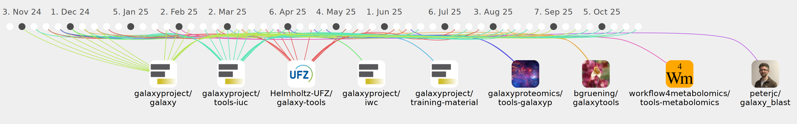

bernt-matthias

Commits all-time: 4449
Commits last year: 322

(143)
- 1c287d4
- bbbc0e7
- 8db215d
- 7c76bc6
- 9adea7d
- 4c39802
- 2d427b5
- c4e04f8
- 72f1885
- 3c993a0
- 195f3bf
- 78d886c
- c3f7701
- 3b2f0f5
- 7edc057
- cd13c9e
- 700d5d4
- 6c82726
- 975d985
- 3033d1d
- 2fdcf76
- 81054ca
- c2be27b
- 41b0961
- 07bc6ee
- 0075495
- 4f920fa
- 5ca77e9
- 8e61470
- b73c44d
- be8c3fe
- 687497a
- bf97536
- a42a66e
- 7d90428
- eb12f33
- 2d0697b
- af016bd
- 4aa4452
- fd7a437
- fc73a6a
- 620ce6a
- ef1a9c3
- 8021fed
- c149e13
- 141118c
- 6f72b0b
- 2d14ce6
- 05cf6bb
- 50cc224
- 78f5427
- 15ad4ca
- 52610d1
- f6770fb
- 7e1621a
- 26bae9d
- ca70d79
- f21e41c
- 047c33f
- d46d2ec
- 6869644
- 1b8aa00
- 791d767
- 08f6380
- 176bcc0
- 59064c0
- 17bcf78
- ace4e37
- 802d7fe
- 97fbd01
- eca92f6
- 89cc1cb
- b8194e4
- 4591c0a
- b0c19fe
- b12efa1
- beceb2f
- 8c23e6a
- 3a40d49
- 65946bd
- 4895b72
- 88dd3fb
- a0fb1df
- c535679
- 49367a6
- d365d03
- 818c85a
- 31e7eb4
- 86015f8
- 3753e5e
- ea21e42
- 658f57a
- 4508a38
- e2889e1
- 1850687
- e334372
- 5f0fbe7
- c64fee6
- 1d1f552
- 5efe64a
- c72f529
- a2e7f70
- bd11b14
- dfcdf0d
- 0431af6
- 9ebed28
- 633c08d
- 3660c0d
- 1ea9e99
- df55c7f
- f36fdde
- 1f062ce
- d98c720
- dc852a2
- 5cd01ad
- 606a2fc
- 7604dda
- acb508d
- 2d3388c
- 6f1673e
- e3d492d
- cf86076
- 8e39b04
- 41bc383
- 8d153f3
- f78b4c5
- c101a3e
- 6e91dab
- a5766d2
- 39ebbc5
- 9752480
- 24a59e2
- 6c98364
- 3b8d4b8
- 9e33d07
- f65944a
- 23d1684
- 5a65a62
- 5563c48
- 849ad75
- 6e06eba
- 82fea56
- a09538a
(101)
- d4f10b2
- f245770
- 2c0a83c
- 7e4c9da
- f9d816b
- c83836f
- 6f485e8
- dc3bff4
- 6f92f75
- 083981f
- d10506a
- 8ff7c9b
- 5547ad5
- 9d876d1
- 70bfcc4
- 8165b9e
- 0247be1
- 9f86a7d
- 188a922
- 5b017b2
- 823e3bd
- 67f43c4
- e55e267
- 41b9216
- 960b331
- 4784313
- 3613811
- d6990b0
- 40d1c8c
- ef72ecb
- 0c186b2
- 8c92cee
- 09269c1
- f43486a
- d3633b1
- e612db1
- 3b43c2a
- e590bc4
- f8074f7
- 8744388
- f683a70
- 4b3fc4c
- b7499b1
- 6fad473
- 8f7271d
- 78dfc61
- c86260b
- dd02f49
- 3ab9dfb
- da0a8da
- 915e63b
- 964a62b
- a71d4dd
- 704f062
- 0ed6442
- cd8da98
- 4b7afea
- 14ab0e2
- b71eaaf
- 79d08a4
- 98ddca1
- b33bb73
- 138d680
- 4ad5399
- b323e9f
- 34d077d
- 2533594
- 70444d3
- d76747d
- 52c69e6
- 716e360
- 00973a4
- 0b6cf74
- 91e06d8
- 079679b
- 8769771
- 8da1d47
- b48907f
- a690880
- 4502d1a
- 7239cf7
- 8959f5b
- 9203996
- 6178df3
- 1b834a7
- 46cd330
- b857a21
- 1dfa4dc
- 8bd436b
- a74cacb
- 49ddcce
- 7ee481e
- 56391f9
- d2f3c3c
- 0c17f10
- f1bb5c2
- 9ab7403
- ee98336
- 11505ae
- bac844c
- aeb29f9
(31)
(26)
(11)
(8)
(1)
(1)